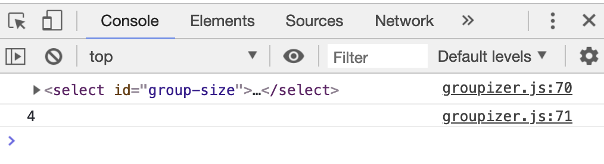
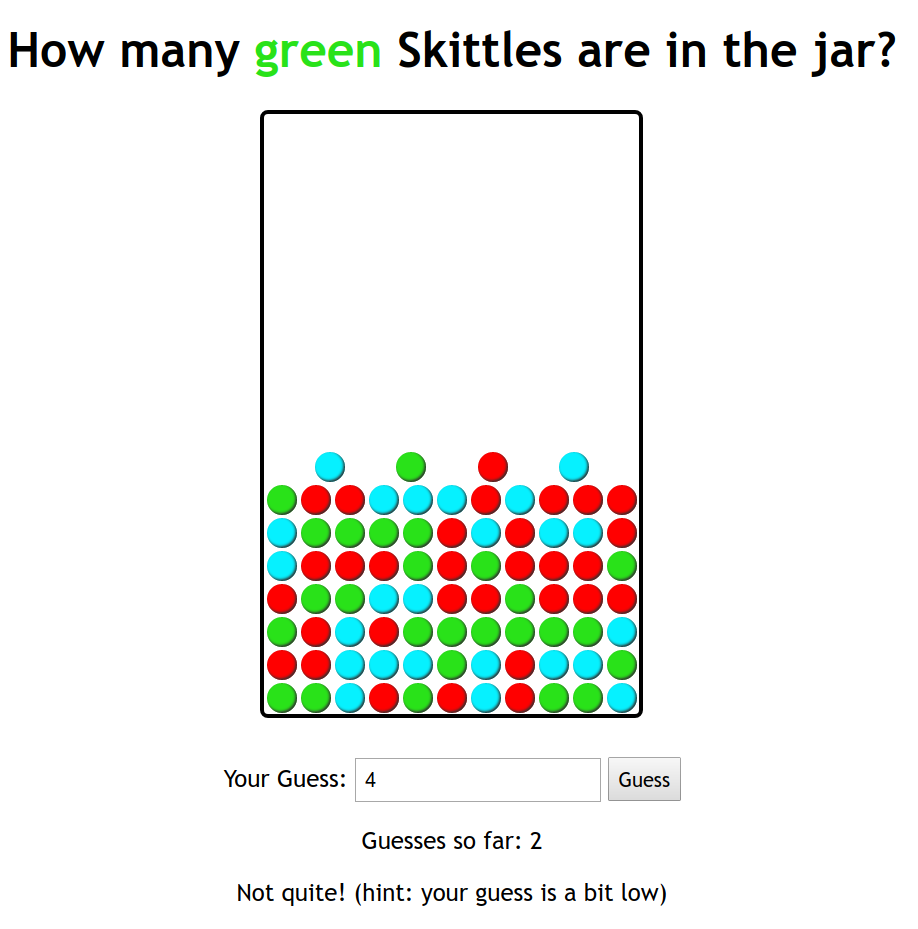

CSE 154
Module 2
Module 2 Learning Objectives
JS Basics (Strings, Numbers, Arrays, Functions, etc.)
Basic HTML UI Elements (buttons, text input, select dropdowns, etc.)
The DOM
- Node Acesss (getElementById, querySelector, querySelectorAll)
- Tree Manipulation (appendChild, removeChild, textContent, etc.)
- Style Manipulation (style vs. classList)
Events
- Common page/user events: load, click, change, mouseover, etc
- DOM/event connections:
addEventListenerandremoveEventListener - Delayed and repeated events:
setTimeoutandsetInterval
A deeper dive into scoping/page event flow
Agenda
HW2 Part A due Thursday
CP2 due Sunday
HW2 Part B will be out soon and due next Thursday
Review JS Basics: "Types", Booleans, and Functions
Scoping and the Module Pattern
Notion of Objects in JS: DOM and Events
- Accessing DOM elements
- Handling page events with with
addEventListener - Changing styles with
classList - Creating and appending DOM elements to the page
Review JS Basics
Scoping and the Module Pattern
The Notion of "Objects" in JavaScript
Anything you interact with on the page is an object. An object in JavaScript has:
- a set of properties (e.g. textContent for DOM objects)
- built-in functions (e.g.
addEventListener). Some objects have different properties/functions than others.
It is helpful to think of the following "types" of objects in JavaScript:
- Global DOM objects
- Objects inside the
document(which is a Global DOM object) - Event objects (yes, events are objects!)
The Six Global DOM Objects
Every JavaScript program can refer to the following global objects:
| object | description |
|---|---|
| document | current HTML page and its content |
| history | list of pages the user has visited |
| location | URL of the current HTML page |
| navigator | info about the web browser you are using |
| screen | info about the screen area occupied by the browser |
| window | the browser window |
You will usually just use window and document.
What's inside a DOM object?
For starters, the HTML attributes. This HTML:
<img src="images/puppy.png" alt="A fantastic puppy photo"/>
<p>A paragraph!</p>HTML
Has two objects (let's call them puppyImg and p) with these properties:
puppyImg.src-- set by the browser toimages/puppy.pngpuppyImg.alt-- set by the browser to"A fantastic puppy photo"p.textContent-- set by the browser to"A paragraph!"
Note: You will also often see textContent as an alternative to
textContent - you may use either.
Creating New Node Objects
| Name | Description |
|---|---|
| document.createElement("tag") | creates and returns a new empty DOM node representing an element of that type |
// create a new <h2> node
let newHeading = document.createElement("h2");
newHeading.textContent = "This is a new heading!";JS
Note: Merely creating an element does not add it to the page
You must add the new element as a child of an existing element on the page...
Adding/Removing Nodes to the DOM
When you have a parent DOM node, you can add or remove a child DOM node using the following functions:
| Name | Description |
|---|---|
| parentNode.appendChild(node) | places the given node at end of this node's child list |
| parentNode.insertBefore(new, old) | places the given node in this node's child list just before old child |
| parentNode.removeChild(node) | removes the given node from this node's child list |
| node.remove() | removes the node from the page |
| parentNode.replaceChild(new, old) | replaces given child with new nodes |
let li = document.createElement("li");
li.textContent = "A list item!";
id("my-list").appendChild(li);JS
Events are also Objects!
Recall that the event handler function can be attached to objects (window, DOM elements, etc.)
sourceEl.addEventListener("click", responseFunction);
function responseFunction(e) {
// we can access the click Event object here!
}JS
When the event occurs, an Event object is created and passed to the event listener. You can optionally "catch" this argument as an optional parameter to get more information about the event.
Event Object Properties
Event objects contain properties about an event that occurred
What types of properties do you think an Event object has?
addBtn.addEventListener("click", addGroup);
function addGroup(e) {
console.log("Add button clicked!");
console.log(e);
}JS

The Keyword this
By default, code runs in the global window object (so this === window)
- All global variables and functions you declare become part of
window
The this keyword refers to the current object
For response functions atteched in addEventListener,
this refers to the source element of the event.
Using "this" with Event Handler Binding
id("group-size").addEventListener("change", logMsg);
function logMsg() {
console.log("<select> changed!");
console.log(this);
console.log(this.value);
// same as console.log(id("group-size").value);
}JS
Event handlers attached in an event listener are bound to the element
Inside the handler, that element becomes this
Skittles!
Starter code: skittles.html (skittles-lec09-starter.zip)
Your are encouraged to have the HTML open on your computer for reference through lecture!
Breaking Down a UI Spec
Today, we will take what we've learned about JavaScript, events, and the DOM, to implement a game for a user to guess the correct number of Skittles in a jar having a certain color.
Think about the following questions:
- What elements in this demo should be listening to different events?
- For each of those elements, what events are they listening to?
- For each of those events, what behavior do you see happen as a result?
Skittles V1 Specification
We will implement a "game" to fill a jar with Skittles. For now, we just want to:
- Switch views when Start/Reset buttons are clicked
- Get the number of colors in a new game (from selected radio buttons)
- Use this number to fill the jar with random number of Skittles and colors!
- Remove Skittles from the jar

Step 1: Hiding/Showing Views
How can we hide display an HTML element?
.hidden {
display: none;
}CSS
How can we add/remove CSS classes with JS?
Modifying the classList
You can manipulate the DOM element's classList with the following methods:
| Name | Description |
|---|---|
| add(classname) | Adds the specified class(es) to the list of classes on this element. Any that are already in the classList are ignored. |
| remove(classname) | Removes the specified class(es) to the list of classes from this element. Any that are already not in the classList are ignored without an error |
| toggle(classname) | Removes a class that is in the list, adds a class that is not in the list. |
| contains(classname) | Returns true if the class is in the the DOM element's classList, false if not. |
| replace(oldclass, newclass) | Replaces the old class with the new class. |
Examples
There were examples of this used in the Skittles code, eg, when a skittle was created, or when the game view was changed.
function gameView() {
id("game-view").classList.remove("hidden");
id("menu-view").classList.add("hidden");
id("results").textContent = "";
}
...
function addSkittle() {
let skittle = document.createElement("div");
skittle.classList.add("skittle");
let randomColor = getRandomColor();
skittle.classList.add(randomColor);
id("jar").appendChild(skittle);
}JS
Why Not .style?
// suppose we have a skittle div we want to give our "pikachuyellow" color
// which is better? why?
skittle.style.backgroundColor = "#f3d77b";
// or
skittle.classList.add("pikachuyellow");JS
Step 2: How Many Colors?
How do we determine what radio button value is selected?
How do we use this value when starting a game?
Useful Selectors for Form/UI Elements
element[attribute="value"] {
property: value;
...
}CSS (template)
input[name='color-count'] {
opacity: 0.5;
}
CSS (example)
output
Attribute selector: matches only elements that have a particular attribute value
Useful for controls because many share the same element (input)
Can also use these selectors in JS with document.querySelector!
Using Attribute Selectors to get a Selected Radio Button
let checkedBtn = qs("input[name='color-count']:checked");
let colorCount = checkedBtn.value;
JS (example)
Are we done?
The starter code has some todos for extra practice of DOM manipulation. If you'd like extra practice, try to work through them to get the expected behavior from the video at home!
Removing DOM elements... a decision
What happens if we don't remove the skittles when we start a new game?
Three methods for removing elements
Get all of the DOM elements and remove them from the DOM
function clearJar() {
let skittles = qsa(".skittle");
for (let i = 0; i < skittles.length; i++) {
// 1. Using node.remove();
skittles[i].remove();
// 2. Using parentNode.removeChild(node);
// skittles[i].parentNode.removeChild(skittles[i]);
}
}JS
Or ... Method 3: Set the Jar's innerHTML to be empty!
function clearJar() {
id("jar").innerHTML = "";
}JS
Note: in general innerHTML hacking is bad
Why not just code this way?
document.getElementById("add").innerHTML = "<p>A result!</p>";JS
Bad code quality (maintainability) on many levels
- Not modular: HTML code embedded within JS
- What if you have a complicated new node (with many subchildren) to add?
- Error-prone: must carefully distinguish " and '
- Can only add at beginning or end, not in middle of child list
// Substitutes all children
id("add").innerHTML = "<p>A result!</p>";
// adds a node to the front of the list of children.
id("add").innerHTML = "<p>A result!</p>" + id("result").innerHTML;
// adds a node to the end of the list of children
id("add").innerHTML += "<p>A result!</p>";JS
One more: removing elements via the parent node
What if you were to add code to get rid of a skittle when its double clicked?
What is the source element? A skittle (div)
What is the event we want to respond to? dblclick
What is the response? removeSkittle
What is the output/elements changed? the parent of the skittle (the jar)
//code added to addSkittle()
skittle.addEventListener("dblclick", removeSkittle);
...
// new function added (with JSDoc not seen here)
function removeSkittle() {
this.parentNode.removeChild(this);
// can also use this.remove() to remove from the document entirely (ES6)
}JS
Some Extra Resources
More on reading/changing styles
More on reading a changing styles
Recall that the .style property of a DOM object lets you set any
CSS style for an element
button { font-size: 16pt; }CSS
<button id="clickme">Click Me</button>HTML
window.addEventListener("load", initialize);
function init() {
id("clickme").addEventListener("click", biggerFont);
}
function biggerFont() {
let size = parseInt(this.style.fontSize); // size === 16pt to start
this.style.fontSize = (size + 4) + "pt"; // notice adding the units!
}JS
output
Problem with reading & changing styles
Note! Be careful to
- remove the units from a
.stylevalue before doing arithmetic on it. - add the units to numerical values (like
pt,px,vw, etc) when setting.stylevalues.
Also: a catch: you can only use this to read styles
that have been set with the DOM .style
earlier in the code or with inline CSS which we don't
want you to do .
You cannot read style properties set in the .css file using .style!
Accessing elements' computed styles
getComputedStyle method of global
window object accesses existing styles
window.getComputedStyle(element).propertyName;JS (template)
img {
height: 600px;
}CSS
> let img = document.querySelector("img");
> img.style.height;
> ""
> img.style.height = "25%";
> "25%"
> window.getComputedStyle(img).height;
> "828.234px"JS Console Output
Thanks to Daniel H for the example
Common bug: incorrect usage of existing styles
The following example attempts to add 100px to the top of main, but fails.
Consider the case when main has top set to "200px". Then
this code would update style.top to be the invalid value of "200px100px"
let main = document.getElementById("main");
main.style.top = window.getComputedStyle(main).top + 100 + "px";
JS
A corrected version:
main.style.top = parseInt(window.getComputedStyle(main).top) + 100 + "px";
JS
Online Resources: Good or Bad?
You may find some resources online helpful to explore different ways to implement UI's in JavaScript - there are a ton of things! But some are better than others (make sure you understand why these examples are poor use of JS).
For reference, here's a much better solution using what we've taught in this course to accomplish a mouseover demo given by W3Schools (view HTML source to get CSS/JS).
Understanding good code quality can be extremely valuable in navigating an overwhelming amount of resources on the web today.
Understanding the Good vs. Bad
We choose resources that best align with our code quality guidelines, while giving just enough "extra detail" into topics we cover in lecture/section/lab. That said, let us know if you're looking for recommendations on a specific resource!
An Alternative Way to Handle Events
We introduced addEventListener as the way to give a
"listener" to a DOM element, mapping an action (event) to a response
(function).
Before addEventListener was introduced in JS, events were most
often handled using "onevent" attributes. You will still see these
occassionally, but addEventListener is the better choice.
Example: onclick
let myBtn = document.getElementById("my-btn");
myBtn.onclick = function() {
console.log("You clicked a button!");
};
JS
let myBtn = document.getElementById("my-btn");
myBtn.addEventListener("click", function() {
console.log("You clicked a button!");
});JS
This is fine to use if you are attaching an event to an element and don't need to ever remove the event listener. It's an older convention, but not necessarily a "bad" one for simple event handling.
Another Example: window.onload
Recall that we need to set up our JS program with a listener for the window's
load event in order to ensure access to DOM elements in our program
when the document has finished loading.
window.addEventListener("load", initialize);
JS
You can achieve the same result using the onload event attribute
for the window. You may see this in some examples, but
addEventListener is preferred.
// initialize defined elsewhere
window.onload = initialize;JS
window.onload = function() {
// this is fine for short setup code, but it's common to factor
// your page setup into an "initialize" function as seen above
};JS